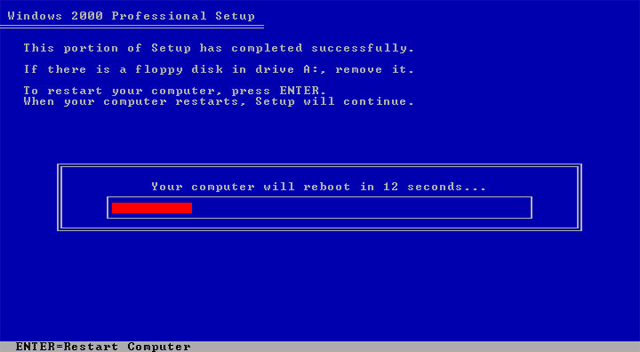
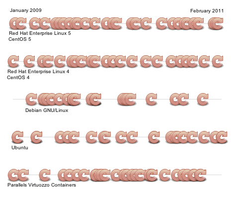
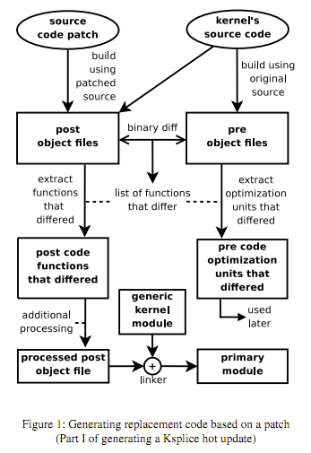
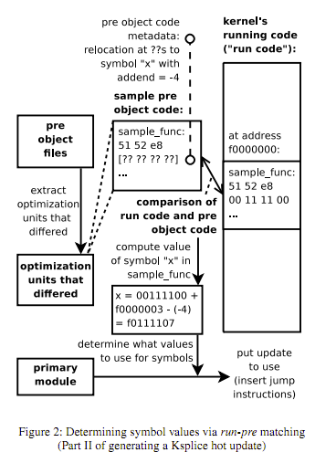

Fast updates to binary code
Tsumobi Readings in (Sometimes Distributed) Systems
Jordan Clifford
Updating Code on Users' devices
When an update is ready, we want users to have a seamless experience:
In scope:
- Seamless - Avoid reboots as much as possible
- Lightweight - Consume as few resources (bandwith/cpu/human attention) as possible
Out of scope:
- Secure - Avoid man-in-the middle attacks or unsigned patches
Any others?
Reboots are painful!

- Interrupts users (increased downtime)
- For many with large clusters of servers, reboots literally cost money.
Not patching software can be worse!
Reboots required for kernel updates by major Linux distributions:

... but there is an alternative
KSplice offers rebootless updates
Needed vocabulary
- object code - machine code, potentially with symbolic references
- run - Object code currently running
- pre - Object code from previous compiled source
- post - Object code from current compiled source
Big ideas
- Update code by placing new versions of any modified functions onto the heap
- Use new versions of functions via a jmp at the old function
- Patches can be generated 100% automatically unless data structure modifications are required
- Does in memory updates only. For on disk updates, a tool like bsdiff4 should be employed. Otherwise, updates are lost on reboot.
Live updates to a kernel
Steps:
- Generate replacement code - Requires source code of before and after
- run-pre matching - Verify that the code running matches what we expect and resolve symbolic references
- update the running code in memory - Requires a pause of all running threads. Any function that needs to be updated cannot appear in any kernel stacktraces
- resume normal kernel execution
Creation of the replacement code

- Finding the functions that differ is the key to the process
- Done at the object code level for maximum robustness. (Fewer required assumptions. The machine's instructions either have changed, or they haven't)
- If any data structures have been updated, handwritten code will need to be provided for the KSplice core kernel module
run-pre matching

- Confirm run and pre match - The update is aborted if the code isn't a perfect match
- Resolving symbolic references is critical to being able to patch a live system
- If the kernel has been previously patched, pre needs to be compiled from source that has previous patches applied
Updating code in EIGHT easy steps
- Execute user provided code via ksplice_pre_apply
- Stop execution of the kernel via stop_machine
- Retry until all functions that need to be updated are not present in any stack traces
- Place new versions of functions in memory
- Insert jmp instructions at the beginning of old methods
- Apply any custom code using the ksplice_apply macro
- Resume kernel functioning
- Execute any ksplice_post_apply macros provided
So now you're running the most up to date code.
Sometimes we have no choice!
With your awesome in memory update, you can package a raw binary diff
bsdiff 4: Naive differences of Executable code
Types of changes as a result
- 0th order - resulting from same source
- 1st order - resulting directly from source differences
- 2nd order - resulting indirectly from source differences
Traditionally, binary diffs are done via COPY and INSERT
This does well if changes are confined to 1st order changes
Bsdiff4 finds fuzzy (approximate) matches into account and creates the following:
- A control file with ADD and INSERT instructions
- A difference file that contains bytewise differences of the approximate matches
- 'Extra' file that contains content that was not part of an approximate match
These things together are typically larger than the destination file itself, but are highly compressible
Takeaways
Rebootless updates, and small binary diffs
- Reduce downtime
- Decrease windows of security vulnerability
- Improve user experience